Overview of the UML Model Browser
Viewing the Details of a UML Model: Class Search
Viewing the Details of a UML Model: Attribute
Search
Downloading Data Elements as XML
The UML Model Browser
provides the following new features for release 3.2:
- Changes to the user interface:
- [Search Preferences Link] There are now provisions to permit
users to choose whether to include the "Test" or
"Training" contexts in searches. By default the two contexts are not
included.
- [Attribute Search]
- Versions are now displayed as part of
the attribute search results information
- Contexts are now displayed as part of
the attribute search results information
- [Searching]
- The UML Project Names will be the
same as those seen in the CDE Browser (as Classification Schemes) and in
the Semantic Integration Workbench
o [Navigation Tree] The Navigation Tree now displays hierarchical Classification Schemes
- [Results List] The Project
(Classification Scheme) version number is now displayed.
- [Project Information]
- Project Information is now available
as a pop-up window linked to the Project Name
- The Project Information pop-up window
displays basic Project details, Reference Documents, and Contact
information
- [Class Information].
- Clicking on the Class Details link
opens the caDSR Object Class Browser displaying the Class Associations
information. [UML Model Classes
are stored in the caDSR database as Object Classes.]
- Overall enhancements
- Performance: The navigation tree now
appears and conducts searches more quickly.
- XML Download: The results of a search
can now be dowloaded as an XML file.
The XML file will be the same as generated from the CDE Browser
which means that the XML tags will be in terms of Data Elements and Value
Domains and not "Classes" and "Attributes"
The UML Model Browser is a web-based tool designed to let
UML Model user/owner search for and view UML model components loaded in the
caDSR database. It is an intuitive way to
view UML classes, attributes, the association
between classes and attributes, and their related ISO Components
The UML Model Browser opens to the Search page. This page contains the main Navigation Menu, the UML Model Search Tree, and the Basic Class/Attribute Search Pane. The UML Model Search tree displays all the current caDSR Contexts at the top level. Under each caDSR context, it lists all the UML classes loaded in that context, grouped by project, subproject and package. Here is an example of an UML search tree.
caDSR Context
caCore
Projects
caCore
Sub Projects
caDSR
Packages
gov.nih.nci.cabio.domain
Agent
Clone
Users can search for groups of classes by navigating the tree and clicking on a context, project, subproject or package. They can also search for groups of attributes by clicking on a class in the tree. The search criteria for class and attribute include
· Attribute name - text field, * can be used as wildcard
· Class name - text field, * can be used as wildcard
· Project - drop down combo box,
When a project is selected, the options for sub project and package changes accordingly
· Project Version - text field, * can be used as wildcard
· Sub Project - drop down combo box, when a sub project is selected, the options for package changes accordingly
· Package - drop down combo box
The class search result displays the following attributes for each class matching the search criteria:
· Class Name: The Class Name is Hyperlinked to its Attribute list in the attribute tab.
· Project Name,
· Project Version,
· Workflow Status
· Sub Project Name,
· Package Name,
· Object Class Public ID: The Object Class Public ID is hyperlinked to the CDE Browser Object Class Details.
· Object Class Version.
The attribute search result displays the following attributes for each attribute matching the search criteria:
· Attribute name,
· Data Type,
· Definition,
· Data Element Name,
· Data Element Public ID: The Data Element Public ID is hyperlinked to CDE browser CDE Details screen for the associated UML Model
· Project Name,
· Sub Project Name,
· Package name .
The UML Model Browser opens to the UML Model Search page. This page contains the main Navigation Menu, the caDSR Search Tree, and the Basic UML Model Search Pane.
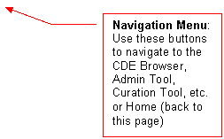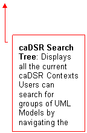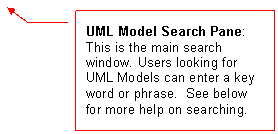
There are several different ways to search for UML Models. The best way
to search will depend on what you are trying to find.
§
Generally,
if you are looking for a collection of UML Models (for example, if you are
trying to find the UML Models associated with an organization), you should use
the caDSR Search Tree.
§
Otherwise,
your best bet is to search by keyword using the Class
Search.
Regardless of which method you use to search for UML Models, the results
of your search will always appear in the UML Model Search
Results table.
The
Basics of Searching
Using the Search Page
To enter a query into the UML Model Browser, just type in the term you want to search on click either the Class Search or the Attribute Search button).
Enter a class name or fragment; the asterisk (*) can be
used as a wild card character. Click the Class Search button to select Models by
searching Class names using on the search criteria.
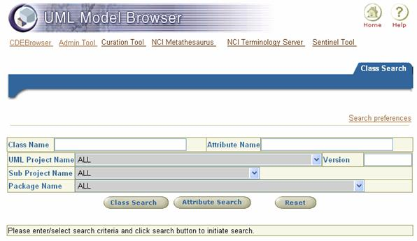

The Browser searches for an exact match of the search term(s) in the class name (Class Search) or attribute name (Attribute Search). Attribute names can be included for a Class Search.
Search Preferences
Clicking the Search Preferences link opens a window where you can choose whether to include the "Test" or "Training" Contexts from your search. You can also reset the default values (both Contexts included in searches) by clicking the link by that name. Click the Save button to apply your preferences.
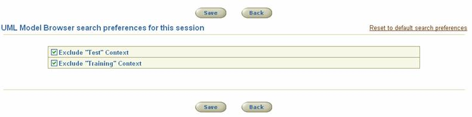
Capitalization
UML Model Browser searches are not case sensitive. The Browser ignores capital letters when searching for UML Models. Concept and concept return the same matches.
Using Wildcards to Broaden a Search
To broaden your search, use the wildcard character (*). The wildcard character can be used more than once within a search term.
Tips on Using
Wildcards
§
To
search for a UML Model that contains the word concept somewhere in a Class
name put a wildcard before and after the search term.
§
To
search for UML Models that contain a Class name that starts with the word Concept,
put a wildcard after the search term.
§
To
search for matching phrases, use wildcards to bridge words. For example, using *value*domain*
will return a matches for EnumeratedValueDomain, ValueDomain,
ValueDomainRelationship, etc.
Searching for UML Models using the caDSR Search Tree
The caDSR Search Tree lists the names of the different Contexts in caDSR
and displays the various groupings of UML Models within each Context. You can
use the caDSR Contexts to help you quickly find collections of UML Models.
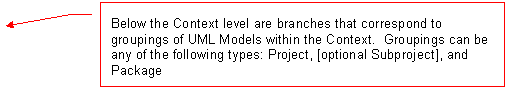 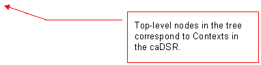
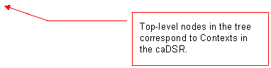
The UML Models Search Results Table
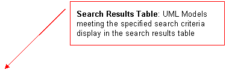UML Models that match your search criteria are displayed in the search results table.
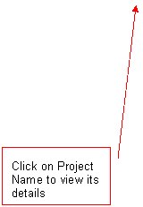
Back to
Help Topics
The multi-tabbed UML Model Details page
displays the details of the UML Model Class you have selected to review.
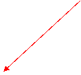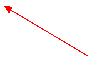
Clicking the Data Element (DE) name will link to the CDE
Browser Data Element Details page for that Data Element
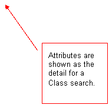 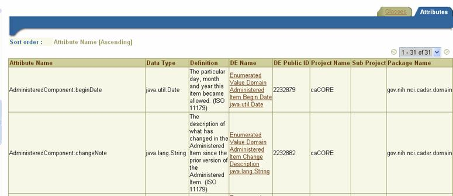
Back to
Help Topics
The multi-tabbed UML Model Details page displays the attribute names that match the search text
provided. Enter the attribute name text
(wilcards supported) and click the Attribute Search button.
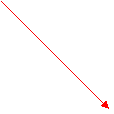 Enter the search text for attributes and click the
Attribute Search button
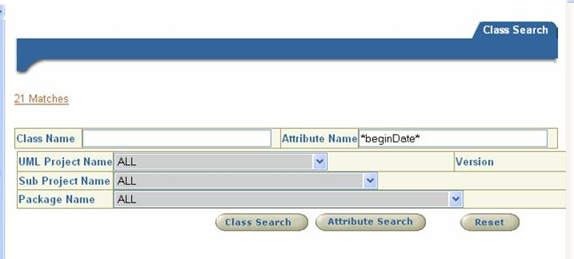
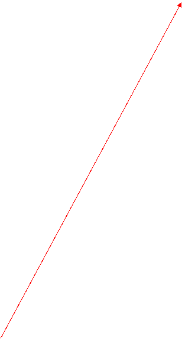
Clicking the Data Element (DE) name will link to the CDE
Browser Data Element Details page for that Data Element
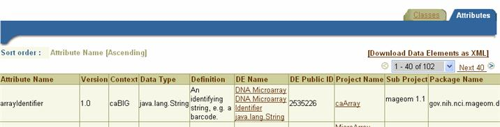
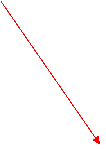
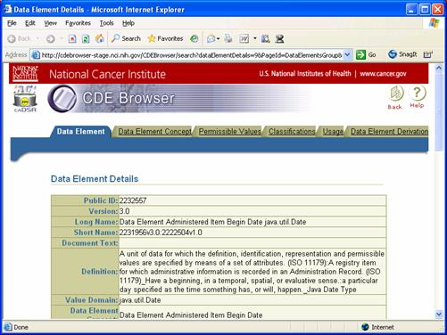
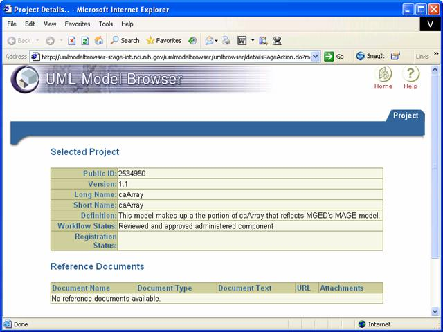
Downloading Data Elements as XML
The Data Elements corresponding to the Attributes on the result list can
be downloaded in an XML format. This
format is the same used for the CDE Browser XML download, so users should note
that the XML tags for the information in the download will be in caDSR metadata
terms (e.g. Data Element) instead of UML Model Terms (Attribute).